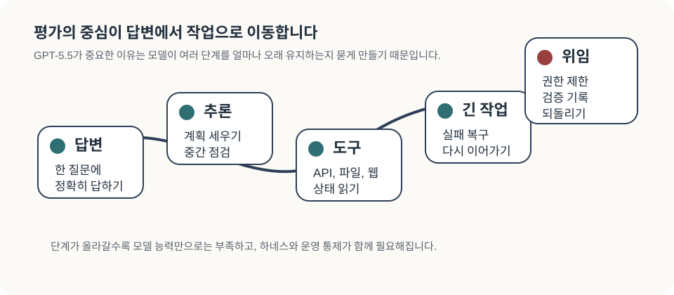
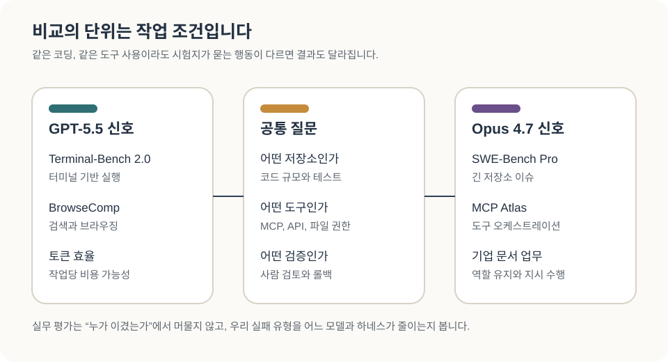
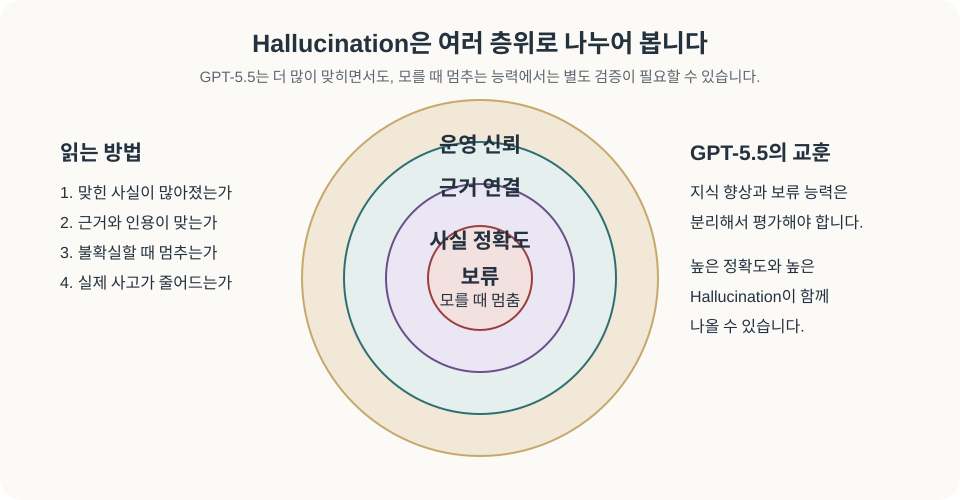
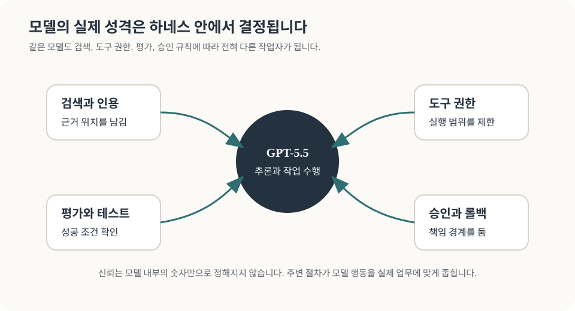
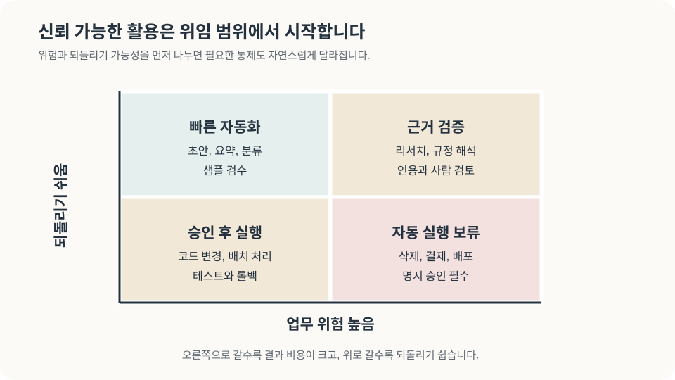

최근 GPT-5.5 업데이트를 직접 써보셨다면, 한 번의 답변 품질과 함께 코드 수정, 자료 조사, 도구 호출이 여러 단계로 이어질 때의 안정감을 보셨을 겁니다. 이 모델은 긴 작업을 얼마나 오래 유지할 수 있을까요? 사람이 중간에 확인해야 하는 지점은 어디일까요? Terminal-Bench, SWE-Bench Pro, BrowseComp, MCP Atlas 같은 벤치마크 이름도 결국 이 질문과 연결되어 있습니다.
OpenAI 발표는 GPT-5.5를 코드 작성, 온라인 조사, 데이터 분석, 문서와 스프레드시트 작성, 소프트웨어 조작, 도구 이동을 오래 지속하는 모델로 설명합니다. 같은 발표에서 GPT-5.5 Pro는 연구 파트너처럼 여러 차례 원고를 비평하고, 기술적 주장을 점검하고, 코드와 PDF 맥락을 동시에 다루는 사례로 소개됩니다. 여기서 중요한 변화는 지식 증가를 넘어 모델이 작업의 시간을 견디는 방식에 닿아 있습니다.
이 리뷰는 그래서 GPT-5.5의 성능 평가에서 끝나지 않습니다. GPT-5.5가 가리키는 발전 방향은 무엇인지, Opus 4.7과 비교하면 어떤 작업에서 차이가 나는지, Hallucination이 많아 보이는 결과는 어떻게 읽어야 하는지, 실제 업무에서는 모델 자체와 엔지니어링 하네스가 어떻게 성능을 만드는지 살펴보겠습니다. 마지막에는 AI를 얼마나 신뢰할 수 있는가라는 논의를, 어떤 업무를 어떤 검증과 통제 아래 맡길 수 있는가라는 실무 쟁점으로 바꾸어 보겠습니다.

GPT-5.5 평가는 작업 지속성과 검증 절차를 함께 봅니다
- GPT-5.5의 핵심 변화는 모델이 한 번에 답을 잘 쓰는 능력에서, 여러 단계를 가진 일을 오래 지속하는 능력으로 평가 초점을 옮기게 한다는 점입니다.
- Claude Opus 4.7과 비교하면 GPT-5.5는 OpenAI 발표 기준 Terminal-Bench, BrowseComp, 전문 업무 일부에서 강하게 보이고, Opus 4.7은 SWE-Bench Pro와 Scale MCP Atlas 같은 외부 도구·코딩 평가에서 앞서는 지점이 있습니다.
- GPT-5.5의 Hallucination 수치가 높아 보이는 이유는 평가가 서로 다른 행동을 보기 때문입니다. 많은 사실을 맞히는 능력과 모를 때 멈추는 능력은 서로 다른 능력입니다.
- 실제 도입에서는 모델명과 하네스를 같이 봐야 합니다. 검색과 인용, 도구 권한, reasoning effort, 중단 규칙, 테스트, 사람 검토가 모델의 실제 행동을 바꿉니다.
- AI 신뢰는 어떤 업무에서 어떤 근거를 남기고, 어떤 권한을 제한하고, 어떤 결과를 사람이 확인할지 정하는 일입니다.
GPT-5.5는 긴 작업 수행을 성능 평가의 전면에 둡니다
OpenAI 발표가 GPT-5.5에서 가장 앞에 놓은 메시지는 agentic AI 인프라입니다. OpenAI는 소프트웨어 엔지니어링에서 출발한 변화가 과학 연구와 일반 컴퓨터 업무에도 적용된다고 설명합니다. OpenAI API 문서도 GPT-5.5를 복잡한 생산 워크플로, 도구가 많은 에이전트, 긴 문맥 검색, 고객 대면 워크플로에 맞춘 모델 패밀리로 안내합니다.
이 흐름은 모델 평가의 단위를 바꿉니다. 예전에는 “단일 문답에 잘 답했는가”가 중심이었습니다. 이제는 “작업 목표를 이해했는가”, “필요한 도구를 골랐는가”, “실패 후 상태를 다시 읽었는가”, “출처와 검증 흔적을 남겼는가”, “멈춰야 할 때 멈췄는가”가 평가 항목에 포함됩니다. 같은 모델이라도 도구 설명, 권한 범위, 검색 방식, 출력 형식, reasoning effort가 달라지면 전혀 다른 작업자로 보일 수 있습니다.

이 점에서 GPT-5.5는 모델 소식이면서 동시에 사용 방식의 소식입니다. 더 많은 일을 맡길 수 있는 모델은 더 많은 검증을 요구합니다. 모델 선택과 작업 환경 설계가 점점 같은 평가 안으로 들어옵니다.
GPT-5.5, Pro, Instant는 같은 이름 아래 다른 평가 항목을 만듭니다
GPT-5.5 계열은 여러 층으로 나누어 읽어야 합니다. GPT-5.5 Thinking은 코드 수정, 긴 조사, 도구 호출처럼 여러 단계를 지속하는 작업 모델입니다. GPT-5.5 Pro는 OpenAI 시스템 카드 기준 같은 기반 모델에 더 많은 계산 시간을 배정하는 고정확도 실행 방식으로 설명됩니다. GPT-5.5 Instant는 OpenAI Instant 발표에서 ChatGPT 기본 경험을 더 간결하고 개인화되고 사실성 높은 방향으로 조정한 모델입니다.
이 구분은 평가 결과를 읽을 때 중요합니다. Thinking의 Terminal-Bench 개선은 장기 작업 수행 능력에 관한 이야기입니다. Pro의 개선은 지연 시간과 비용을 더 쓰는 실행 방식이 어려운 과제에서 얼마나 값을 하는지 묻습니다. Instant의 사실성 개선은 기본 대화 경험에서 특정 오류 유형이 줄었는지를 봅니다. 세 결과를 하나로 섞으면 도입 판단이 흐려집니다.
OpenAI 가격표에서도 이 차이가 확인됩니다. 2026년 5월 10일 접근 기준 gpt-5.5는 표준 short-context에서 100만 토큰당 입력 5달러, 출력 30달러이고, gpt-5.5-pro는 입력 30달러, 출력 180달러입니다. 비용이 높아진 만큼 운영팀은 성공한 작업당 총비용, 재시도율, 사람 검토 시간, 오류 복구 가능성을 같이 봐야 합니다.
Opus 4.7과의 비교는 작업 성격에서 드러납니다
GPT-5.5와 Claude Opus 4.7을 비교할 때 가장 먼저 조심해야 할 점은 벤치마크마다 평가 항목이 다르다는 것입니다. OpenAI 발표 표에서는 GPT-5.5가 Terminal-Bench 2.0에서 82.7%로 Opus 4.7의 69.4%를 앞섭니다. BrowseComp도 GPT-5.5 84.4%, GPT-5.5 Pro 90.1%로 Opus 4.7의 79.3%를 앞섭니다. 같은 OpenAI 표에서 SWE-Bench Pro는 GPT-5.5가 58.6%, Opus 4.7이 64.3%입니다. Scale MCP Atlas도 2026년 5월 10일 접근 기준 Opus 4.7 max 79.1%, GPT-5.5 xhigh 75.3%로 Opus가 앞섭니다.
이 차이는 모델을 고르기 전에 작업 조건을 먼저 보게 만듭니다. Terminal-Bench는 터미널 환경에서 작업을 풀어가는 능력을 강하게 봅니다. SWE-Bench Pro는 실제 저장소 이슈를 해결하는 장기 소프트웨어 작업을 묻습니다. MCP Atlas는 여러 MCP 서버와 도구가 열린 상태에서 적절한 도구를 고르고, 인자를 넣고, 중간 결과를 합치는 능력을 봅니다. 같은 “코딩”이나 “도구 사용”이라고 불러도 실제 시험지는 서로 다릅니다.
Anthropic의 Opus 4.7 발표는 기업 고객 사례에서 역할 유지, 지시 따르기, 도구 실패 후 지속 수행, 문서 추론을 강조합니다. Artificial Analysis는 GPT-5.5가 Intelligence Index에서 1위를 기록했고, medium effort가 Opus 4.7 max와 같은 지표 점수를 더 낮은 비용으로 냈다고 평가했습니다. 이 자료들을 같이 읽으면 GPT-5.5는 토큰 효율, 검색·브라우징, 터미널형 실행, OpenAI 생태계의 Codex/Responses API 결합에서 강한 신호가 있고, Opus 4.7은 긴 소프트웨어 이슈, 도구 오케스트레이션, 문서 기반 엔터프라이즈 작업에서 강한 비교 신호가 있습니다.

모델을 고를 때는 먼저 우리 업무의 실패 형태를 적어보는 편이 좋습니다. 터미널에서 테스트를 돌리고 빠르게 고쳐야 하는지, 큰 저장소의 이슈를 장시간 추적해야 하는지, 많은 도구 중 적절한 API를 찾아야 하는지, 문서 근거를 정교하게 다뤄야 하는지에 따라 답이 달라집니다.
Hallucination이 많아 보이는 이유는 평가가 다른 능력을 재기 때문입니다
GPT-5.5에서 가장 흥미로운 대목은 사실성과 Hallucination입니다. OpenAI Instant 발표는 GPT-5.5 Instant가 GPT-5.3 Instant 대비 의학, 법률, 금융 같은 고위험 문항에서 hallucinated claims를 52.5% 줄였고, 사용자가 사실 오류로 신고했던 어려운 대화에서 부정확한 주장을 37.3% 줄였다고 설명합니다. 이 숫자만 보면 사실성 문제가 크게 개선된 것처럼 보입니다.
한편 Artificial Analysis는 GPT-5.5 xhigh가 AA-Omniscience에서 정확도 57%로 가장 높은 값을 보였지만 Hallucination 비율은 86%였다고 보고했습니다. 같은 자료에서 Opus 4.7 max는 36%, Gemini 3.1 Pro Preview는 50%로 제시됩니다. 두 결과가 다르게 보이는 이유는 평가 단위가 다르기 때문입니다.
OpenAI의 Instant 평가는 특정 고위험 문항 묶음이나 사용자 신고 기반 오류 대화에서 이전 Instant 모델과 비교한 개선입니다. Artificial Analysis의 AA-Omniscience는 모델이 다양한 사실 문항에 답할 때 얼마나 많이 맞히는지와, 모르는 문항에서도 답을 시도하는지를 동시에 봅니다. GPT-5.5가 더 많은 사실을 알고 더 많은 문제를 맞히면서도, 불확실할 때 답을 보류하는 능력에서는 불리하게 보일 수 있습니다.

이 구분은 사용자의 신뢰 문제와 바로 연결됩니다. 지식이 많은 모델은 틀릴 때도 더 설득력 있게 틀릴 수 있습니다. 긴 작업을 잘 수행하는 모델은 잘못된 중간 가정도 더 오래 끌고 갈 수 있습니다. 그래서 신뢰할 수 있는 AI 활용은 “모델이 사실을 많이 안다”에서 출발하되, “모를 때 어떻게 행동하는가”와 “근거를 어떻게 남기는가”까지 확인해야 합니다.
엔지니어링은 모델의 실제 성격을 바꿉니다
GPT-5.5 같은 모델을 써보면 모델의 특성이 고정된 것처럼 느껴질 때가 있습니다. 어떤 날은 빠르고 간결하고, 어떤 작업에서는 지나치게 오래 탐색하고, 또 어떤 상황에서는 확신 있게 틀립니다. 이 차이의 일부는 모델 자체에서 오지만, 상당 부분은 엔지니어링 조건에서 옵니다.
OpenAI API 문서는 GPT-5.5를 이전 모델의 drop-in replacement처럼 다루지 말고 새 기준선에서 조정하라고 안내합니다. reasoning.effort는 기본값이 medium이며, low, high, xhigh를 업무에 맞춰 평가하라고 합니다. 같은 문서는 higher reasoning effort를 항상 품질 개선으로 취급하지 말라고 설명합니다. 중단 기준이 약하거나 도구 접근이 넓거나 지시가 충돌하면 더 오래 생각하는 설정이 과도한 검색, 과잉 추론, 품질 저하를 만들 수 있습니다.
모델의 실제 성격은 다음 요소에서 만들어집니다. 어떤 문서를 검색하게 하는가. 검색 결과를 어떻게 인용하게 하는가. 도구 이름과 인자를 얼마나 명확하게 설명하는가. 파일 쓰기나 외부 요청 권한을 어디까지 줄 것인가. 실패했을 때 재시도할지 멈출지 어떻게 알려줄 것인가. 결과물을 어떤 테스트와 사람 검토에 통과시킬 것인가. 이 모든 것이 합쳐져 우리가 체감하는 “모델의 신뢰성”이 됩니다.

이 지점에서 “모델의 특성”과 “제품의 특성”도 나뉩니다. GPT-5.5 Instant가 더 간결하게 답하고, 필요 없는 후속 요청을 줄이고, 개인화 맥락을 더 잘 쓰는 것은 모델 성능과 제품 경험이 같이 만든 결과입니다. 기업이나 연구팀이 API로 GPT-5.5를 적용할 때도 비슷합니다. 모델을 바꾸는 것만으로 원하는 행동이 나오지 않습니다. 업무별 하네스를 같이 바꿔야 합니다.
AI를 얼마나 신뢰할 수 있는가는 업무의 모양에 따라 달라집니다
AI를 믿을 수 있느냐는 질문은 업무의 조건을 함께 물을 때 답할 수 있습니다. 조금 더 좁혀 말하면, 어떤 업무에서 어떤 실패가 허용되는지, 실패했을 때 되돌릴 수 있는지, 결과를 검증할 수 있는지의 문제입니다. 회의록 초안을 쓰는 일과 법률 판단을 내리는 일은 같은 신뢰 기준을 가질 수 없습니다. 코드 리팩터링 제안과 프로덕션 DB 수정도 같은 권한을 줄 수 없습니다.
신뢰는 네 가지 층위로 나눠볼 수 있습니다. 첫째, 결과가 사실과 맞는가. 둘째, 그 결과가 어떤 근거에서 왔는가. 셋째, 모델이 모르는 상황에서 멈출 수 있는가. 넷째, 실행 결과를 되돌릴 수 있는가. GPT-5.5가 더 긴 작업을 할 수 있게 될수록 네 번째 검토 항목이 더 중요해집니다. 답변이 틀린 문제와 실행이 잘못된 문제는 복구 비용이 다릅니다.
사이버보안 영역에서 이 차이가 잘 드러납니다. OpenAI 시스템 카드는 GPT-5.5를 생물·화학과 사이버보안 영역에서 높은 능력 수준으로 취급합니다. UK AISI 평가는 GPT-5.5가 역공학과 사이버 훈련장 작업에서 여러 단계를 묶어 수행하는 사례를 공개했습니다. 방어 업무에서는 유용한 능력입니다. 동시에 넓은 실행 권한과 만나면 조직이 감당해야 할 위험도 커집니다.
안전한 활용은 제한된 위임에서 시작합니다
GPT-5.5를 도입하려는 팀은 모델 선택 전에 업무를 네 칸으로 나눠볼 수 있습니다. 위험이 낮고 되돌릴 수 있는 일은 빠르게 자동화해도 됩니다. 위험은 낮지만 규모가 큰 일은 샘플링 검수와 비용 관리를 더해야 합니다. 위험이 높지만 근거 검증이 가능한 일은 검색, 인용, 사람 검토를 필수로 둡니다. 위험이 높고 되돌리기 어려운 일은 승인 없는 자동 실행을 피해야 합니다.

실무 체크리스트는 복잡할 필요가 없습니다. 대표 업무 20개 정도를 골라 내부 평가 세트를 만들고, 모델명과 reasoning effort, 도구 목록, 검색 방식, 출력 형식, 검토 기준을 같이 기록합니다. 답변 정확도만 보지 말고 근거 누락, 출처 오류, 불확실성 보류, 잘못된 도구 호출, 재시도 횟수, 사람 검토 시간도 봅니다. 성공한 작업당 총비용을 계산하고, 높은 effort가 실제로 품질을 올렸는지 확인합니다.
승인 경계도 필요합니다. 파일 삭제, 배포, 결제, 고객 발송, 권한 변경, 보안 스캔 결과 조치처럼 되돌리기 어려운 작업에는 사람 승인과 감사 로그를 남겨야 합니다. GPT-5.5의 강점이 긴 작업 수행이라면, 운영팀의 강점은 그 긴 작업이 잘못된 방향으로 오래 진행되지 않게 막는 구조를 만드는 것입니다.
GPT-5.5 이후에는 모델 선택과 운영 설계를 함께 봐야 합니다
GPT-5.5 이후의 AI 경쟁에서는 모델 점수와 작업 환경을 함께 보는 평가가 늘어날 가능성이 큽니다. 어떤 모델을 쓰는가 못지않게 어떤 도구를 연결하는가, 어떤 권한을 주는가, 어떤 평가를 통과시키는가, 어떤 사람이 마지막 책임을 지는가가 중요해집니다.
Opus 4.7과의 비교도 같은 판단을 요구합니다. 두 모델은 모두 장기 작업, 도구 사용, 엔터프라이즈 문서 처리, 코딩 에이전트에서 강해지고 있습니다. 두 모델을 비교할수록 질문은 어느 모델이 절대적으로 우수한가에서 어떤 업무 조건에서 안정적인가로 구체화됩니다. 조직 입장에서는 업무별 모델 포트폴리오와 평가 체계를 만드는 편이 더 현실적입니다.
Hallucination을 다룰 때도 검증 절차가 필요합니다. GPT-5.5는 더 많은 사실을 맞히면서도, 모르는 것을 멈추는 능력은 별도로 확인해야 함을 알려줍니다. 앞으로의 AI 활용에서는 검색과 인용, 불확실성 표시, 답변 보류, 사람 검토, 실행 권한 제한이 모델 성능만큼 중요한 기술 요소가 됩니다.
우리는 AI를 얼마나 신뢰할 수 있을까요? GPT-5.5 이후의 신뢰는 모델이 틀릴 수 있는 지점을 드러내고 제한하는 능력에서 만들어집니다. GPT-5.5는 더 많은 일을 맡길 수 있는 모델입니다. 그만큼 더 정교한 위임 설계가 필요해집니다.
작성 정보
- 작성자: 김현중 with Codex Agent | AI Governance Team
- 검토 기준일: 2026-05-10
- 원 패키지:
2026-05-06_gpt-5-5-family-post-release-evaluation - 문체 기준: reader-experience opening, 단계적 주제의식, AI식 대비 문장 제거
- 시각자료: 히어로 이미지 1개, 새 SVG 도식 5개
References
- OpenAI,
Introducing GPT-5.5, 2026-04-23, updated 2026-04-24. https://openai.com/index/introducing-gpt-5-5/ - OpenAI Deployment Safety Hub,
GPT-5.5 System Card, 2026-04-23, updated 2026-04-24. https://deploymentsafety.openai.com/gpt-5-5 - OpenAI,
GPT-5.5 Instant: smarter, clearer, and more personalized, 2026-05-05. https://openai.com/index/gpt-5-5-instant/ - OpenAI Deployment Safety Hub,
GPT-5.5 Instant System Card, 2026-05-05. https://deploymentsafety.openai.com/gpt-5-5-instant - OpenAI API docs,
Using GPT-5.5, accessed 2026-05-10. https://developers.openai.com/api/docs/guides/latest-model - OpenAI API docs,
Pricing, accessed 2026-05-10. https://developers.openai.com/api/docs/pricing - Anthropic,
Introducing Claude Opus 4.7, accessed 2026-05-10. https://www.anthropic.com/news/claude-opus-4-7 - Artificial Analysis,
OpenAI's GPT-5.5 is the new leading AI model, 2026-04-23. https://artificialanalysis.ai/articles/openai-gpt5-5-is-the-new-leading-AI-model/ - Scale Labs,
MCP Atlas, accessed 2026-05-10. https://labs.scale.com/leaderboard/mcp_atlas - Scale Labs,
SWE-Bench Pro (Public Dataset), accessed 2026-05-10. https://labs.scale.com/leaderboard/swe_bench_pro_public - Xiang Deng et al.,
SWE-Bench Pro: Can AI Agents Solve Long-Horizon Software Engineering Tasks?, arXiv:2509.16941, revised 2025-11-14. https://arxiv.org/abs/2509.16941 - UK AI Security Institute,
Our evaluation of OpenAI's GPT-5.5 cyber capabilities, 2026-04-30. https://www.aisi.gov.uk/blog/our-evaluation-of-openais-gpt-5-5-cyber-capabilities
-
Hallucination은 생성형 AI가 실제 근거가 없거나 틀린 정보를 그럴듯하게 답하는 현상을 뜻합니다. 한국어로는
허위 생성,환각,사실 오류등으로 옮겨 쓰지만, 평가 문맥에서는 Hallucination이라는 용어가 더 넓게 통용됩니다. ↩ -
MCP는 Model Context Protocol의 약자로, 모델이 여러 도구와 데이터 원천에 일관된 방식으로 접근하도록 돕는 프로토콜입니다. MCP Atlas는 실제 MCP 서버와 도구를 사용해 모델의 도구 선택, 인자 입력, 오류 복구, 최종 답변 품질을 평가합니다. ↩
-
reasoning effort는 추론 모델이 답변을 만들기 전에 더 많은 계산 시간과 추론 토큰을 쓰도록 조정하는 실행 설정입니다. GPT-5.5 API 문서는
low,medium,high,xhigh를 업무 성격과 비용에 맞춰 평가하라고 안내합니다. ↩